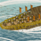
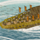

Requires
- Buildings:

- Resources:

Enables
- Units:


 


Basic Building Statistics (can be modified by difficulty level, arts, skills, traits and retainers)
- Cost: 2700
- +200 to wealth from ports in this province
- +1 per turn to town growth from ports within this province
- Recruitment capacity (ship under construction): +3
Description
A good shipwright travels in his own ship.
A drydock is a basin that can be drained for shipbuilding work, and then flooded when a vessel is completed. This allows very large ships to be built safely and then gently floated out when complete. The process of draining and flooding the dock is dependent upon the tides, with lock gates being left open at particularly low tides, and then closed just as the tide turns. This minimises the work to get any remaining water out of the dock. Although slow and cumbersome to operate, a drydock lets shipwrights construct and repair the most powerful vessels invented to date. Historically, it was not until the Sengoku Jidai that the Japanese started building large warships, and even then not for any national fleet. Most Japanese vessels resembled nothing so much as floating castles, probably because of a lack of credible long range anti-ship weaponry such as cannons. Instead, Japanese naval battles nearly always came to be large scale boarding actions, where individual valour and aggression mattered more than seamanship. Unfortunately, this also meant that casualties in naval battles tended to be severe, as ship's crews often had little choice but to fight to the death.